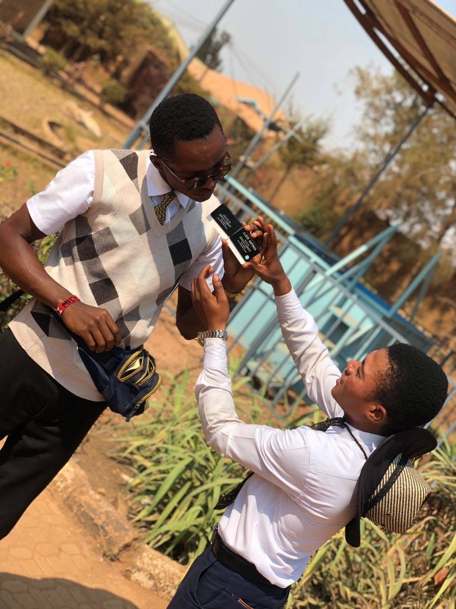
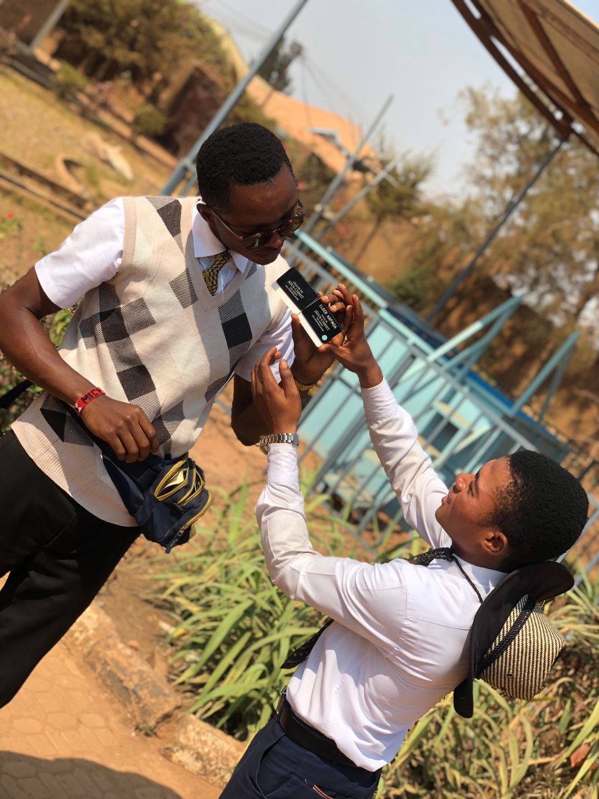

POURQUOI CHOISIR ANGEDEL SERVICE

ANGEDEL service est une entreprise qui se soucie tellement de la satisfaction de ses clients en les offrants un service de qualité en temps reel .!

ANGEDEL service est une entreprise qui se soucie tellement de la satisfaction de ses clients en les offrants un service de qualité en temps reel .!
Les Débuts (2010) L'idée de creer ANGEDEL SERVICE été reussi en 2010 ,et la concretisation etait fqite en 2024 par ILUNGA MUKEMBA ALLEN , un jeune entrepreneur passionné par l’environnement. son ambition était claire : créer des alternatives écologiques aux produits du quotidien pour réduire l’impact environnemental. L’entreprise a vu le jour dans un petit atelier à lubumbashi, avec une idée révolutionnaire : importer la farine /breakfast et reduire le prix pour faciliter la tache au certains commercants Une Première percée en javier (2024) Au ,mois de mars , ANGEDEL service a lancé ses premiers service phare dans ces domaines: transport, construictions des meubles par ces techniciens devoués et en fin ANGEDEL service offrais aussi de reservation des billet de voyage. Ces services a immédiatement séduit les clients locaux soucieux dans tous les domaines cités precedment , permettant à l’entreprise de croître rapidement et d’embaucher ses premiers collaborateurs. Croissance et Innovation au mois novembre (2024) Avec le succès grandissant de transport et d'autre , l’entreprise a diversifié sa gamme pour inclure des services d'exportation et importation d'autres produit ansi que le voyage international . En 2015, ÉcoSolutions a remporté le Prix de l’Innovation Verte, un jalon qui a marqué son entrée sur le marché national. Vers l’International. Desormais, l’entreprise se concentre désormais sur le développement de nouvelles technologies pour atteindre un objectif ambitieux : .

 
